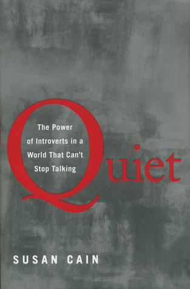

home | en
three sentence book reviews
| The first three chapters are great: bell hooks presents a clear definition of love and describes how most people don’t experience it. But then she abandons that definition and starts writing crazy shit like “if all public policy was created in the spirit of love, we would not have to worry about unemployment, homelessness, schools failing to teach children, or addiction.” In hooks’ world, everything bad is because of mass media and the patriarchy, and it could all be fixed if we loved each other. |

|
| People of all races use drugs at about the same rates, but the War on Drugs and the resulting explosion in incarceration rates has disproportionately landed on minority communities. Michelle Alexander argues that mass incarceration is a system of racial control of the same scale and nature as slavery and Jim Crow. The absence of an extended discussion of elevated violent crime rates in minority communities and some tenuous historical allusions (she argues building prisons in rural areas boosts population and thus congressional representation in white majority areas in a manner reminiscent to the three-fifths compromise) detract from an otherwise compelling argument. |

|
| Camus' writing is clear and easy to read. He puts the main character in a bunch of awkward situations that seem to accumulate without cohering. But there's actually a pretty cool, straightforward philosophical idea being presented here (the Sparknotes is useful if it went over your head like it did mine). |

|
| The profanity is a gimmick, but the substance of the book is great. Mark Manson critiques consumerist, individualist culture in fresh ways. He offers effective tools for wading through it all without giving a fuck. |

|
| Coates writes beautifully. But he’s too cynical. Blackness doesn’t mean relentless struggle against oppression. |

|
| Leovy’s nonfiction account of a murder in L.A. reads like a detective novel. She cuts through the politics to present one way to reduce black-on-black violence: more thorough investigations. Very well-researched, very emotional, and deeply concerned with preserving black lives. | |
| Very cute drawings. Lovely story. Probably deep, but over my head. |

|
| Barbara Ehrenreich is old enough to die. This book discusses her acceptance of that reality and her frustration with a health culture more intent on extending life than enjoying it. She makes strong arguments, but often digresses. |

|
| Eugenia Cheng has a gift for analogies. She makes research mathematics accessible with constant references to baking. It's like the Mm... Food of math texts. |

|
| Villani does a great job of showing how math is like poetry, and crucially, how math is not like poetry. It’s easy to get lost in important sounding vagaries when talking about math. But Villani is precise and develops a compelling analogy. |

|
| Finally! A clean description of populism: an aesthetic wrapper around any given ideology delineating a morally pure people and a corrupt elite. Mudde and Kaltwasser give detailed examples from around the globe to develop a clear definition. | |
| Westover's insane childhood deserves a memoir, and she delivers. She describes her journey from a violent, cloistered religious family in rural Idaho who wouldn't let her attend school to a Ph.D from Cambridge. Lots of thoughtful reflections on family and education draw from her experience of the extremes of both. |

|
| Most political memoirs are unreadable, but this one is different. Michelle Obama chronicles her journey from the Southside of Chicago to the Ivy League to the White House with a relatable, human voice. My favorite parts were when she talked about the challenge of raising kids while her husband was a state senator and she was a professional woman. |

|
| Very readable — I think this was meant for workers while Das Kapital was meant for intellectuals. But no thanks, Karl and Friedrich. I like property. |

|
| Feelings are bullshit, the "self" isn't a coherent idea, and you should probably meditate. Robert Wright presents these ideas from Buddhism and shows how they're supported by modern science. I'm convinced. | |
| Malala's story humanizes the Swat Valley. Her descriptions of the weather, the people, and her daily struggle to get educated show a side of Pakistan we rarely see in depth in the West. She's a hero, and this book deserves all the praise it's received. |

|
| Sandra Uwiringiyimana's childhood was horrifying, with her seeing her sister die in conflict in Eastern Congo. But my favorite parts of the book were toward the end, when she discusses the difficult adjustment to life in the US. We often cut off stories when the protagonist makes it out of danger, but Sandra's descriptions of what happens after the credits roll lands well. |

|
| This book covers the history of translation software while managing to avoid getting too technical. Thierry Poibeau starts with rule-based translation and builds up to the deep learning models that power Google Translate. Great overview. |

|
| Equal parts dry and ideological, this book is a chore. Zinn's repetitiveness and leftist politics overpower his eye-opening nuggets of US history often ignored by textbooks. I tried reading it backward, from the Clinton years to Columbus chapter by chapter, which made it a little more interesting. |

|
| Scott Jurek is vegan. He also runs ultramarathons. This memoir discusses his eating and running, interspersed with recipes and full of insight into a simple life. | |
| Cal Newport argues convincingly that passion is not a great thing to build a career around. Instead he advocates developing rare and valuable skills that give one the leverage needed to gain autonomy. Job satisfaction and job security come with being indispensable. |

|
| Paul Campos is a law professor who has repeatedly called law school a scam. The numbers are on his side: the job market for attorneys simply doesn't align with the cost of law school. His style can be a bit condescending, but the message is important for young people considering law school. |

|
| This graphic novel takes place in the corner of a living room. Every pane looks at the same spot, but varies across time, ranging from millions of years in the past to thousands of years in the future. Richard McGuire's creative exploration of the scale of our time on the planet shows what we're doing to the climate. |

|
| Racial dynamics in Portland are interesting because the city is very progressive, but also has an exclusionary past that has led to a tiny, fairly marginalized minority population. Renée Watson explores all this through the lens of a black high school student who buses across town to a fancy private school. She nails the feeling of being talked down to by racially insensitive (or racially oversensitive) liberals. | |
| Many people frame this book as an airing of grievances, but while there's a small amount of griping, it's a pretty spot-on analysis of the 2016 election. Clinton takes responsibility for the things that were her fault and complains about the things that weren't. There were a lot of reasons she lost, and this book goes through them carefully using the best evidence available. |

|
| This book is not good. What First Nations people have experienced in Canada is horrifying. But the "white men came to steal our dreams" twist ending is such identitarian left nonsense. |

|
| Amy Chua’s parenting style dances on the edge of abuse. Forcing her kids to practice violin for 6 hours, calling them losers — this is crossing a line. The kids are grown and successful and say they wouldn’t want to have been raised any other way, but I think it’s Stockholm Syndrome. |

|
| Richard Reeves makes the case that the richest 20%, not 1% are the real villains of American capitalism. He describes how zoning laws and other legal mechanisms prevent upward mobility for the rest of the country. Seems about right. |

|
| This book is dark. The premise sounds a bit YA: a young girl founds a new religion in the middle of a climate disaster. But there's quite a bit of rape and gore, and Butler has a knack for nonchalant sentences that stop you in your tracks and make you realize how fucked up the situation is. | |
| O'Neill is at times alarmist, but makes a compelling case that algorithmic thinking is often used to disguise value judgements. I totally agree with her, for example, that the US News and World Report college rankings are literally cancer. It's great to hear this argument coming from a mathematician too -- it would be probably less convincing coming from a social scientist. |

|
| The controversial section on race didn't seem all that controversial; it's plausible to me that racial differences in IQ have a genetic origin, and Murray and Herrnstein go no further than stating it's a possibility. Beyond that, the thesis of the book is provocative: meritocracy is creating an unintelligent underclass. It's a perspective on inequality I haven't heard before. |

|
| Douglas Hofstadter's 1979 classic Gödel, Escher, Bach is long and difficult. So in 2008, he re-explored his ambitious theory of cognition in a more streamlined, personal book. Some of the whimsy of GEB is traded for blunt emotionality; the loss of his wife plays a role in his thinking on consciousness, and he does not hide this fact from the reader. | |
| This isn’t a how-to guide, but instead a novel written entirely in the second person. You escape poverty, fall in love, and get rich in some unnamed South Asian country. But at at what cost? | |
| Black Africans and black Americans have very different histories and cultures. Wamba, the son of an African dad and American mom, tries to bridge the gap. I don’t think he succeeds. |

|
| I asked my librarian for a book about friendship and she recommended this one. But are Lennie and George even friends? Lennie just kind of puts up with George. |

|
| I'll always roll my eyes at writers who insist that their names be lowercase (that includes bell hooks). But danah boyd offers a smart, nuanced look at how teenagers use social media. She cuts through parental bogeymen and media hype to show how Instagram of the 2010s is the mall of the 1980s. |

|
| It’s hard to find science writing that's a little meatier than pop science but doesn't feel like homework. I think Greene nails it here. His use of accessible analogies and detailed footnotes makes the book easy to pick up without being too hand-wavey. |

|
| Too deep for me. I liked the part about the “noble lie” though. It made me think about how/why we build inviolable bedrocks of self-worth with stuff like unconditional love or racial superiority. | |
| I love that Snicket doesn’t shy away from showing death. He says losing someone is like walking up some stairs, expecting one more step, and then feeling a jolt when your foot keeps falling. I doubt many children’s novels should address death as honestly and sensitively as this one. | |
| This is the most realistic representation of high school I’ve seen in fiction. It follows a young football star’s changing priorities as he navigates his junior year. The problems he runs into, especially in family life, are ordinary but explored with enough subtlety to be gripping. |

|
| Set in the Depression-Era Midwest, this children’s novel deals with some heavy topics. Bud Caldwell escapes an abusive foster home and goes in search of a famous musician he suspects is his father. Bud is funny, scrappy, and a great lens into both the racial and economic turmoil and the jazzy ambience of that period of American history. | |
| Personality is a huge aspect of identity, as important as race or gender. Susan Cain describes the strengths of introverts, and how they can often be crowded out in our extrovert-friendly culture. She is exhaustive in her research and practical in her advice. |  |
| Having survived the Holocaust, the psychiatrist Victor Frankl understood the depths of human suffering. This book is a study of how he was able to find purpose after having everything he knew taken away from him. I like that he doesn't present a universal idea of what meaning is, but rather a process for seeking it out. |

|
| D. Watkins went from selling crack to a Master's degree at Johns Hopkins and a professorship at the University of Baltimore. This collection of essays describes a life on the violent, east side ("Beast Side") of Baltimore unimaginable to most Americans. He gets a bit repetitive and his politics are a bit too radical for me, but his perspective is one that rarely (though more so recently) makes it into the public discourse. |

|
| J.L. Chestnut was the first black attorney in Selma, Alabama. His memoir shows the fear, violence, and jubilation of living in the heart of the Jim Crow South during the Civil Rights Movement. Particularly interesting to me were the descriptions of racial discord in Selma in the 80s and 90s, showing the continuing struggle decades after Bloody Sunday. |

|
| This novel is very much a product of its 1999 release year, centering on a murder during the height of the Satanic Panic. Daniel Handler (who also wrote A Series of Unfortunate Events under the name "Lemony Snicket") seems to specialize in writing young characters straining toward adulthood. The high school students here are witty, thoughtful, and written with care. |

|
| Pretty much everything you might see in an undergraduate math degree shows up in this book. Steven Strogatz presents it all with a flair for story-telling. He's a great communicator, keeping a nice balance between accessibility and informativeness. |

|